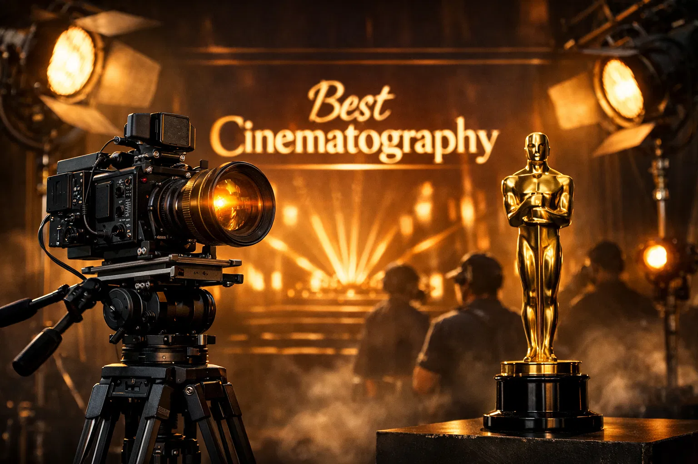
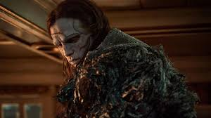
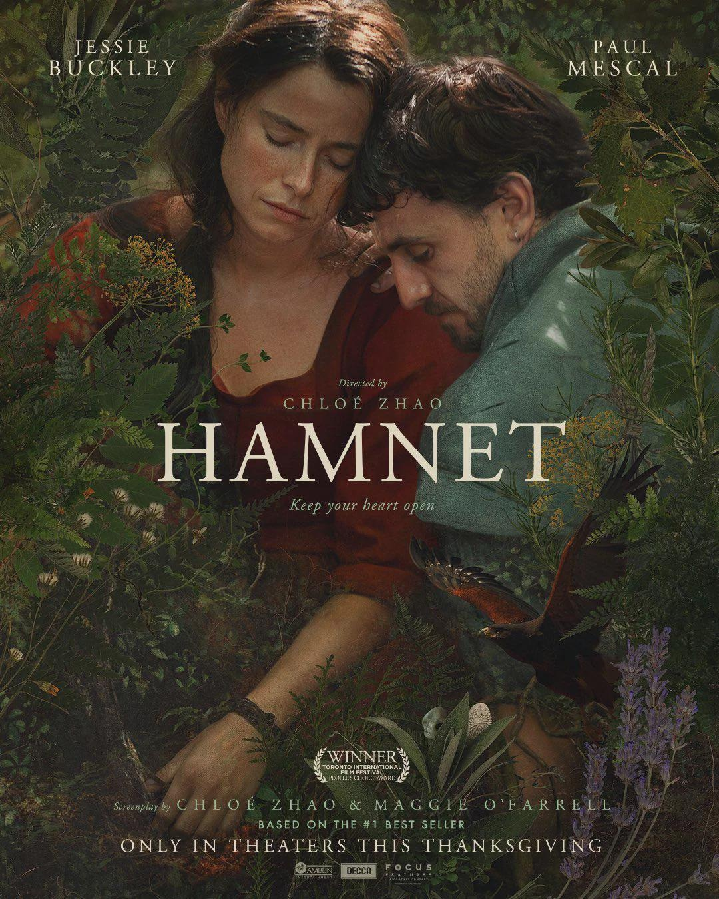
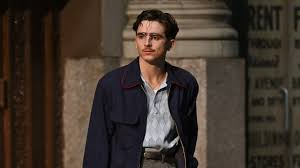
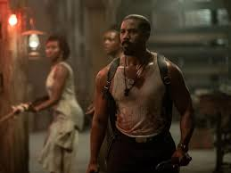
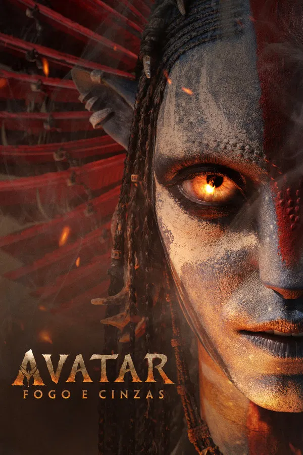

98th Annual Academy Awards
Melhor Fotografia
Conheça os candidatos à Premiação do Oscar 2026 por Melhor Fotografia.

Vencedor
Frankenstein
O Figurino: Desenvolvido para refletir o horror gótico. Enquanto Victor Frankenstein (Oscar Isaac) usa trajes vitorianos impecáveis em tons sóbrios, a Criatura (Jacob Elordi) veste farrapos de couro e lona que parecem "enxertados" ao seu corpo.
Destaque: O trabalho de envelhecimento dos tecidos (breakdown). As roupas da Criatura possuem texturas que sugerem umidade, terra e decomposição, servindo como uma extensão física de sua pele costurada.

Hamnet: A Vida Antes de Hamlet
O Figurino: Focado na autenticidade total. A figurinista utilizou lãs brutas, linhos pesados e tingimentos feitos a partir de plantas e minerais para criar o guarda-roupa de Agnes (Jessie Buckley).
Destaque: A ausência de "glamour" histórico. As roupas mostram suor, sujeira de terra e o desgaste do trabalho manual, integrando os personagens de Chloé Zhao à natureza de forma orgânica e quase documental.

Marty Supreme
O Figurino: Josh Safdie traz uma visão hiper-estilizada. O personagem de Timothée Chalamet usa ternos de corte afiado, camisas polo de malha fina e jaquetas que definem a silhueta da época com um toque moderno.
Destaque: A curadoria de acessórios. Óculos de acetato, relógios clássicos e o uso estratégico de cores saturadas transformam o esporte (pingue-pongue) em um desfile de moda de alta energia e atitude.

Pecadores (Sinners)
O Figurino: Ruth E. Carter cria um contraste entre o vestuário austero e conservador dos habitantes locais e o estilo mais utilitário e "estrangeiro" dos irmãos interpretados por Michael B. Jordan.
Destaque: O simbolismo religioso. O uso de bordados sutis e silhuetas que remetem à década de 1930, mas com uma paleta de cores que evoca o "gótico americano", aumentando a sensação de paranoia e mistério do filme.

Avatar: Fire and Ash
O Figurino: A equipe criou adornos para o "Povo das Cinzas" utilizando elementos que sugerem obsidiana, ossos de criaturas locais e fibras resistentes ao calor.
Destaque: A engenharia digital. Embora muitos elementos sejam renderizados, o design físico foi construído para entender como o movimento e a luz da lava interagem com as joias e armaduras dos Na'vi, criando um visual exótico e funcional.